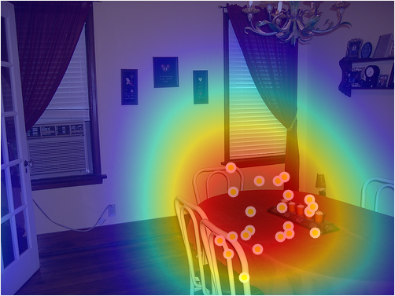
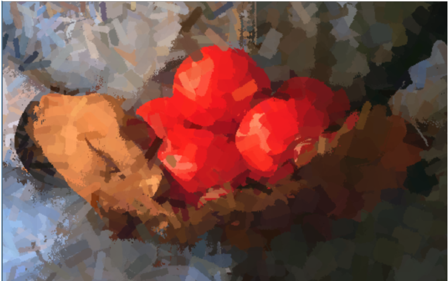

Brief Bio.
I am currently a graduate student at Department of Computer Science in Stony Brook Univeristy. From fall 2014 I'm working in the Computer Vision Lab under the supervision of Prof. Dimitris Samaras and Prof. Minh Hoai.
Prior to this, I received my master degree from the Robotics Institute, Carnege Mellon University in 2013 advised by Prof. Mel Siegel.
I work on research problems in Computer Vision and Machine Learning. I am especially interested in plugging human visual perception experience into computer vision to boost performance. I am also interested in the other way around -- using computer vision methods to model human visual perception systems.
I'm a recipient of the Renaissance Technologies Fellowship from 2014 to 2017.
Contact Info.
- LAB: 631-632-2469
- zijwei 'at' cs.stonybrook.edu
- Room 138, New Computer Science Building
- Computer Science, Stony Brook University, Stony Brook, NY11794-2424
Education & Experience
-
2014 - NowGraduate Student & Research Assistant @ Stony Brook UniveristyAdvisor(s): Dimitris Samaras & Minh HoaiTopics: Deep Learning with Human Data
-
2013 - 2014Research Associate @ Carnegie Mellon UniversityAdvisor(s): Prof. Yaser Sheikh and Yair Movshovitz-AttiasTopics:
- Real Time Sign Detection for the Visually Impaired
- Object Recogniton and Localization Using CAD Models
- Children Autism Detection Using Multiple Visual Cues
-
2012 - 2013Master of Robotics @ Carnegie Mellon UniversityAdvisor:Prof. Mel Siegel
-
Summer'12Intern @ ABB. Shanghai R&D DepartmentTopic: multi-view guided grasping system
-
2011 - 2012Graduate Student @ Nanjing University of Science and TechnologyAdvisor:Prof. Chunxia Zhao and Prof. Mel Siegel
-
2007 - 2011Bachelor of Computer Science @ Nanjing University of Science and TechnologyGPA:3.53/4.0, Ranking: 6/82
Skills
Programming
-
General Languages:
-
Libraries & SDKs:
MS-MFC, OpenCV, OpenGL
Android, OpenRave
-
Deep Learning Frameworks:
Torch, TensorFlow, MatConvNet
Software
-
O.S
Linux, MacOS
-
Editing
Latex, Adobe Photoshop
-
Others
Maya
Adobe Premiere
TA Experience
-
CSE525 S2016
Introduction to Robotics
-
CSE525 S2015
Introduction to Robotics
-
CSE214 S2015
Computer Science II
-
CSE110 F2014
Intro. to Computer Science

Research Interests
- Object Recognition
- Gaze Enabled Object Recognition
- Human Visual Perception Modeling Using Deep Neural Network
- Visual Interestingness Detection in Videos
Publications
[1] Region Ranking SVM for Image Classification.
Proceedings of IEEE Conference on Computer Vision and Pattern Recognition (CVPR) 2016
Abstract
The success of an image classification algorithm largely depends on how it incorporates local information in the global decision. Popular approaches such as averagepooling and max-pooling are suboptimal in many situations. In this paper we propose Region Ranking SVM (RRSVM), a novel method for pooling local information from multiple regions. RRSVM exploits the correlation of local regions in an image, and it jointly learns a region evaluation function and a scheme for integrating multiple regions. Experiments on PASCAL VOC 2007, VOC 2012, and ILSVRC2014 datasets show that RRSVM outperforms the methods that use the same feature type and extract features from the same set of local regions. RRSVM achieves similar to or better than the state-of-the-art performance on all datasets.
[2] 3D Pose-by-Detection of Vehicles via Discriminatively Reduced Ensembles of Correlation Filters
Proceedings of British Machine Vision Conference (BMVC) 2014
Abstract
Estimating the precise pose of a 3D model in an image is challenging; explicitly identifying correspondences is difficult, particularly at smaller scales and in the presence of occlusion. Exemplar classifiers have demonstrated the potential of detection-based approaches to problems where precision is required. In particular, correlation filters explicitly suppress classifier response caused by slight shifts in the bounding box. This property makes them ideal exemplar classifiers for viewpoint discrimination, as small translational shifts can often be confounded with small rotational shifts. However, exemplar based pose-by-detection is not scalable because, as the desired precision of viewpoint estimation increases, the number of exemplars needed increases as well. We present a training framework to reduce an ensemble of exemplar correlation filters for viewpoint estimation by directly optimizing a discriminative objective. We show that the discriminatively reduced ensemble outperforms the state-of-the-art on three publicly available datasets and we introduce a new dataset for continuous car pose estimation in street scene images.
Recent Projects @ SBU
-

When performing visual serach tasks, people sample information from the image with their eye-movements. A sparse set of regions are used for decision instead of the whole image. Learned region sparsity has also achieved state-of-the-art performance in classification tasks in computer vision community. In this project we draw connections between the two sparsity models and investigat whether these mechanisms of sparsity and diversity in computer vision correspond to visual attention sparsity by testing our model on different types of visual tasks. We expect to shed some light on the possible visual attention mechanisms in the brain and argues for inclusion of attention-based mechanisms for improving computer vision techniques.
-

We believe that users' visual behaviors during natural viewing of images contain rich information about the content of images. This project aims at boosting object detection performance by incorporating information from observers' eye movements. While primary results have been promising, we are exploring more appropriate ways of encoding these behavioral information from multiple observers to imporve the performance of modern object detection algorithms such as R-CNN.
Misc. Projects @ SBU
-

{kind=link}
{kind=link}
{kind=link}
{kind=link}
{kind=link}
{kind=link}
{kind=link}